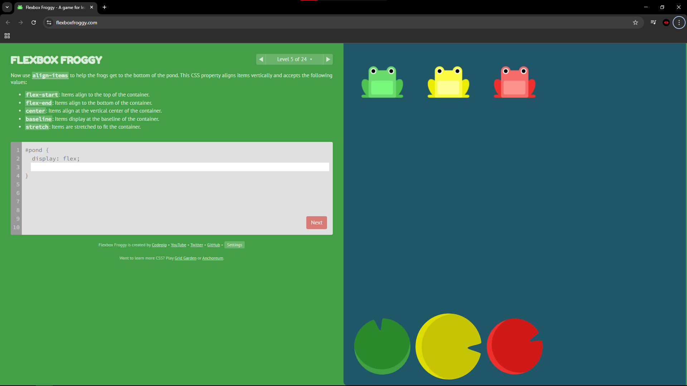

Registro de Níveis
Flexbox Zombies
Nível 6: Nunca tinha usado o flex-end e esse foi o que me fez entender melhor.

Nível 7: Este nível foi baludo demais, tá doido, o justify-content é massa demais.

Nível 10: Demorei pegar o bagulho dessa, mas depois foi massa.

Flexbox Froggy
Nível 5: Flex-end dnv que eu aprendi no outro game.
Nível 9: A introdução do `align-self` me confundiu com relação ao `align-items`, pois afeta apenas um item.
Nível 12: A soma de várias propriedades como `justify-content`, `align-items` e `flex-direction` exigiu atenção redobrada.